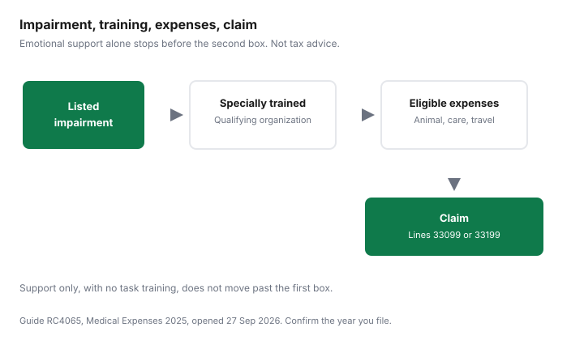

Pets · Canada
Service Animals and the Medical Expense Tax Credit in Canada
A service animal can be a medical expense. A pet that comforts you is not, on the sentence the Canada Revenue Agency prints. This page is Guide RC4065, Medical Expenses 2025, checked 27 Sep 2026, applied to that one row, plus the arithmetic that turns eligible receipts into the amount on line 33099 or 33199. The wider credit, including the threshold and which spouse claims, is the medical expense tax credit guide. Uninsured human fees that sit on other rows are the uninsured-fees guide. This is education, not tax advice. The notice of assessment is the document that governs. If you need to talk to someone about mental health, call or text 9-8-8.
Key takeaways
- RC4065 allows the cost of a specially trained animal for a person who is blind, profoundly deaf, markedly restricted in the use of arms or legs, severely affected by autism or epilepsy, living with severe diabetes, or, for expenses after 2017, living with a severe mental impairment.
- The animal must perform specific tasks. An animal that only provides emotional support does not qualify, in the guide’s words.
- Eligible amounts include the animal, care and maintenance including food and veterinary care, and reasonable travel to learn to handle the animal, including board and lodging for full-time attendance. Training animals must be a main purpose of the provider.
- For the 2025 guide, you subtract the lesser of $2,834 and 3 percent of net income on line 23600. A later tax year can use a different dollar. The guide does not print a credit percentage in the sections used here.
- Do not send receipts with the return. Keep them. Food you claim under this row is still a receipt problem. The pet-food guide is how to read a bag, not whether the bag qualifies.
When a service animal's costs qualify for the medical expense tax credit
The medical expense tax credit is a non-refundable credit. It can reduce tax you owe.
It is not a refund of the whole bill. RC4065 says you can generally claim amounts paid even if they were not paid in Canada, and only the part for which you have not been and will not be reimbursed. A service animal’s costs qualify when the animal and the person match the service-animal section, not because the household has a dog.
The person must be in one of these situations, in the guide’s words: blind; profoundly deaf; a severe and prolonged physical impairment that markedly restricts the use of the arms or legs; severely affected by autism or epilepsy; severe diabetes; or a severe mental impairment, for expenses incurred after 2017. The animal must be specially trained to perform specific tasks that assist the person in coping with the impairment. An animal that only provides emotional support is not considered specially trained for a specific task. The training of such animals has to be one of the main purposes of the person or organization that provides the animal. A neighbour who likes dogs, or a seller who will not say that training is a main purpose, fails that last sentence even if the animal is useful at home. Confirm the organization and the impairment with the CRA’s current guide before you file. The 2025 edition is the one cited here. A return for a later year needs that year’s edition.
Line 33099 is you, your spouse or common-law partner, and your or your spouse’s children who were under 18 at the end of the year. Line 33199 is eligible expenses you or your spouse paid for certain dependants 18 or older, and for other listed relatives who lived in Canada at any time in the year, calculated dependant by dependant. The service animal’s person has to be one of those people. The guide’s own period rule: eligible expenses paid in any 12-month period ending in 2025 and not claimed by you or anyone else in 2024. For a person who died in 2025, the guide allows a 24-month period that includes the date of death if the expenses were not claimed for any other year.
Eligible costs: acquisition, care, maintenance, travel to training
The guide says that in addition to the cost of the animal, care and maintenance, including food and veterinary care, are eligible. Reasonable travel expenses for the person to go to a school, institution, or other place that trains them in handling the animal are eligible, including reasonable board and lodging for full-time attendance at the school.
“Reasonable” is the guide’s word. It does not print a meal allowance or a mileage rate in that paragraph. Keep the receipts and the reason for the trip. A holiday that included a visit to a trainer is not, by itself, the travel the sentence describes.
Ordinary pet costs that are not care of a qualifying animal stay off the claim. The vet-bill guide is how to read a clinic invoice. If veterinary care is eligible because the animal qualifies, the invoice still has to show what you paid. Food is the same. The pet-food guide compares bags on weight and calories. It does not make a bag a medical expense. If part of a cost was reimbursed and that reimbursement was not included in income, the guide says you cannot claim the reimbursed part. Provincial and territorial medical-expense maximums can differ. The guide points residents of Quebec to Revenu Québec and everyone else to the provincial information in the income tax package. This page does not copy a provincial dollar.
Psychiatric service dogs: the conditions CRA sets
The guide does not define a psychiatric service dog as a product. The row that readers use for that situation is the severe mental impairment, for expenses incurred after 2017, plus the task test.
The animal must be specially trained to perform specific tasks that assist the person in coping with the impairment. Emotional support alone is explicitly not enough. A vest, a letter that says “support animal,” or registration on a website that is not a training organization does not appear in the section as a substitute for those tasks. If you are in crisis or you want to talk, call or text 9-8-8. That line is support. It is not a tax ruling.
The service-animal section of the 2025 guide, as opened, does not print the words “prescription needed” on that row. Other rows in the same guide, such as insulin and vaccines, do print that label. Do not invent a prescription requirement the service-animal paragraph does not show, and do not assume a prescription is unnecessary if a later edition adds one. Read the edition for the year you file. A proposed change that is not in the official text is not stated.
Records and documentation to keep
The guide says that if you file electronically or on paper, do not send supporting documents. Keep them in case the CRA asks.
Receipts must show the name of the company or individual who was paid. Receipts for attendant care or therapy paid to an individual should also show that person’s social insurance number. Receipts should show the purpose of the payment, the date, the patient’s name, and, if applicable, the medical practitioner who prescribed the purchase or gave the service. The CRA may ask for proof of payment, such as bank or card statements. For a dependant 18 or older, it may ask for proof of support.
For this row, also keep the paperwork that shows the animal was provided by a person or organization whose main purposes include training such animals, and a description of the tasks the animal was trained to perform. The guide does not attach a mandatory form number to that sentence in the section cited. If the CRA asks, the records you kept are the answer. A credit-card slip with no purpose line is the receipt the guide says is incomplete.
Claiming: which spouse, which 12-month period
You can choose any 12-month period ending in 2025 that was not already claimed in 2024. It does not have to be the calendar year.
The guide’s example uses 1 July 2024 to 30 June 2025 for Richard and Pauline, which is a general medical-expense example, not a service-animal story. Their combined eligible total for themselves and their 16-year-old daughter is $6,300. Pauline’s net income is $55,000. Three percent is $1,650, which is under $2,834, so she could claim $4,650. Richard’s net income is $42,000. Three percent is $1,260, so he could claim $5,040. The guide says it is better, in that case, for Richard to claim. The mechanism is the 3 percent test. The spouse with the lower net income subtracts less, so more of the same receipts can enter the credit. Run both calculations. The tax-credit guide walks that example in full.
On line 33099 you subtract the lesser of $2,834 and 3 percent of your net income on line 23600. On line 33199 you subtract the lesser of $2,834 and 3 percent of that dependant’s net income. The $2,834 figure is the one in the 2025 guide checked 27 Sep 2026. Do not type it onto a later year’s return until you have opened that year’s guide. The federal credit rate is not printed in the service-animal section or in the threshold paragraphs used here, so this page does not multiply by a percent and call the result your refund. The return does that step. A non-refundable credit cannot reduce tax below zero by itself.
Worked example
The dollars in this section are an illustration so the subtraction is visible. They are not a CRA example, not the price of a dog, and not a suggestion that $4,000 is a typical year. Replace them with your receipts.
Suppose eligible service-animal costs in the 12-month period are $4,000, nothing was reimbursed, and the claimant’s net income on line 23600 is $60,000. Three percent of $60,000 is $1,800. That is less than $2,834, so the lesser amount is $1,800. Subtract it from $4,000. The amount that can enter the credit is $2,200. If the same $4,000 sits with net income of $100,000, three percent is $3,000, which is more than $2,834, so the lesser amount is $2,834. Subtract that from $4,000. The amount that can enter the credit is $1,166. Below the threshold, the credit on these receipts is zero. The guide does not say the animal was unnecessary. It says the arithmetic did not clear the line. Run the spouse’s net income as well, the way the Richard and Pauline example does, before you decide who claims.
| Expense | Eligible? | Conditions in the guide | Source |
|---|---|---|---|
| Cost of the animal | Yes, if the tests are met | Listed impairment. Specially trained for specific tasks. Provider’s main purposes include that training. | RC4065, service animals |
| Food and veterinary care | Yes, as care and maintenance | Same animal. Only the unreimbursed part. Receipts kept, not mailed with the return. | RC4065, service animals, and the documents section |
| Travel to handler training | Reasonable travel, yes | Includes reasonable board and lodging for full-time attendance. No mileage rate printed in that paragraph. | RC4065, service animals |
| Emotional support only | No | Not specially trained for a specific task, in the guide’s sentence. | RC4065, service animals |
| Severe mental impairment | Yes, if tasks are met | Expenses incurred after 2017. Specific tasks, not support alone. | RC4065, service animals |
| Amount after the threshold | The excess only | Lesser of $2,834 and 3 percent of line 23600, for the 2025 guide. Illustrative $4,000 at $60,000 of income leaves $2,200. At $100,000 it leaves $1,166. | RC4065, amounts you can claim. Arithmetic on this page. |

Sources & date stamps
- Canada Revenue Agency, Guide RC4065, Medical Expenses 2025, checked 27 Sep 2026. Service-animal section, the $2,834 and 3 percent threshold, the 12-month period ending in 2025, lines 33099 and 33199, the documents section, and the Richard and Pauline example ($6,300, $4,650, and $5,040) as cited. The guide says it is information only and does not replace the law. No federal credit percentage was copied, because those paragraphs do not print one.
- Illustrative arithmetic: 3 percent of $60,000 is $1,800; $4,000 − $1,800 = $2,200. 3 percent of $100,000 is $3,000, so the lesser amount is $2,834; $4,000 − $2,834 = $1,166. Placeholder receipts, not a CRA example.
- A federal rate of 15 percent, sometimes quoted for this credit, was not in the sections used. It is not applied here. Confirm the year’s guide and the return.
Frequently asked questions
Can I claim my service dog on my taxes?
Guide RC4065, Medical Expenses 2025, allows the cost of a specially trained animal that helps a person cope with one of the impairments the guide lists, including blindness, profound deafness, a severe and prolonged impairment that markedly restricts the use of the arms or legs, severe autism or epilepsy, severe diabetes, and a severe mental impairment for expenses incurred after 2017. The animal has to be trained to perform specific tasks. You claim eligible amounts on line 33099 or 33199, then subtract the lesser of $2,834 and 3 percent of the relevant net income. This is the 2025 guide. Confirm the year you are filing. It is not tax advice.
What service animal costs are eligible?
The guide says the cost of the animal, plus care and maintenance, including food and veterinary care. Reasonable travel to a school or other place that trains you to handle the animal is eligible, including reasonable board and lodging for full-time attendance. The training of such animals has to be one of the main purposes of the person or organization that provides the animal. Claim only the part you will not be reimbursed for. Keep receipts. The guide tells you not to send them with the return unless the CRA asks.
Do psychiatric service dogs qualify?
The service-animal section does not use the phrase psychiatric service dog. It does allow an animal for a person with a severe mental impairment, for expenses incurred after 2017, when the animal is specially trained to perform specific tasks that help the person cope with the impairment. An animal that only provides emotional support is not considered specially trained for a specific task. If you need to talk to someone, call or text 9-8-8. Confirm the animal’s training with the organization and the claim with the CRA.
Is an emotional support animal eligible?
No, on the sentence in RC4065. An animal that only provides emotional support is not considered to be specially trained for a specific task. Companionship, by itself, is not the test the guide prints. If the animal was trained to do specific tasks for a listed impairment, the question is those tasks and that impairment, not the words on a vest. This page does not decide a particular animal.
What records do I need?
The guide says not to send documents with the return. Keep them in case the CRA asks. Receipts should show who was paid, the purpose, the date, the patient’s name, and, if it applies, the medical practitioner. The CRA may also ask for proof of payment, such as a bank or card statement. For a service animal, keep the training organization’s papers as well, because the guide requires that training animals be one of that organization’s main purposes. Confirm the year’s list before you file.
Researched and drafted with AI assistance and fact-checked against official Canadian sources. How we create content.